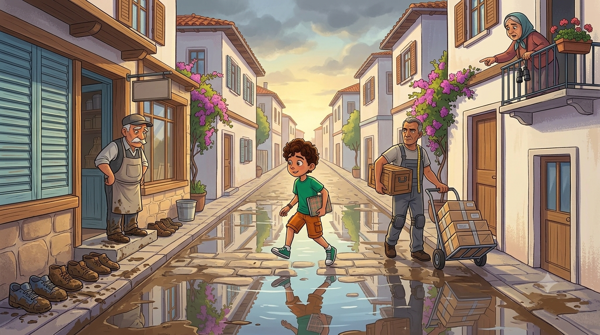
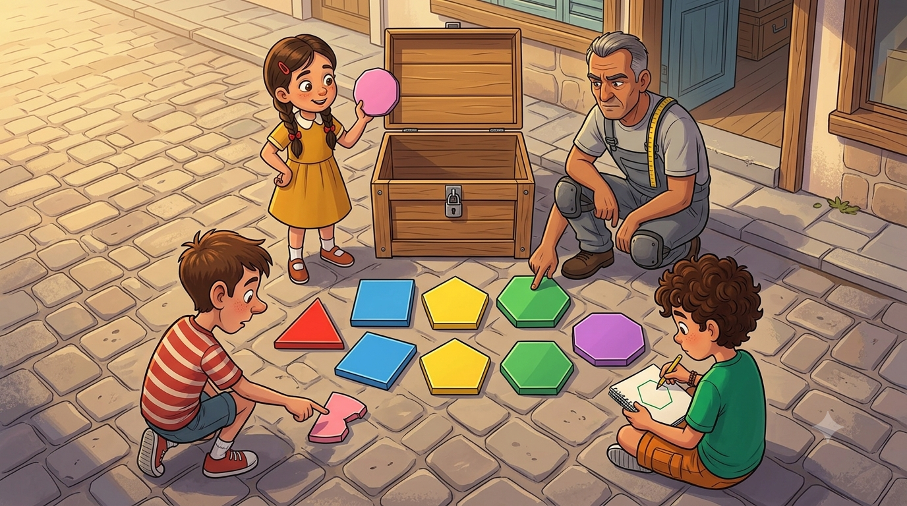
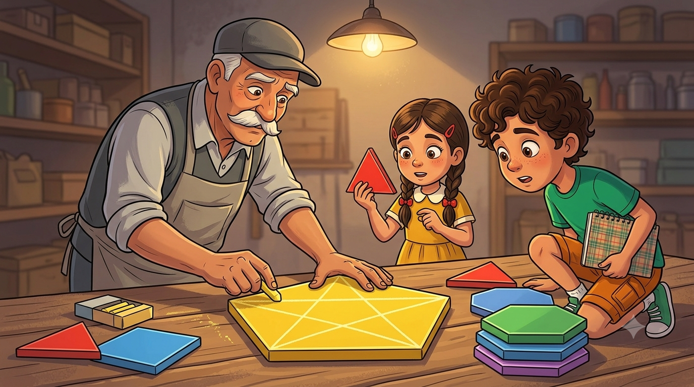

O hafta üç gün yağmur yağdı. Dedemin dükkânının önü çamur deryasına döndü; müşteriler içeri girerken ayakkabılarını kapıda çıkarıyor, dedem de "Nalbur mu burası, cami mi?" diye söyleniyordu. Mübeccel Teyze balkondan durumu özetledi: "Süfyan Efendi, dükkânının önünde manda bile kaybolur!"
Muhtar devreye girdi; belediyeden dükkânın önü ve meydan için fayans çıkarttı. Fayansları döşemeye de mahallenin efsane ustası geldi: Fayansçı Kadir Usta. Kadir Usta az konuşur, çok ölçer. Yanında da tahtadan, kilitli, üstü çizik içinde bir sandık taşır. Rivayete göre o sandıkta dünyanın bütün şekilleri vardır.
Kadir Usta beni tepeden tırnağa süzdü: "Saha çizen çocuk sen misin?" Başımı salladım. "Börek bölen?" Salladım. "Harita çizen?" Salladım. "Tamam," dedi, "desen işini sana veriyorum." Muhtar hemen resmîleştirdi: "Desen Tasarım Genel Sorumlusu!" Dördüncü unvanım. Kartvizit bastırsam artık arkasına da yazı gerekecek.

Kadir Usta sandığı açtı. İçinden neler çıktı neler: üç kenarlı fayanslar, dört kenarlı fayanslar, beş, altı, sekiz kenarlılar... Bir de yusyuvarlak, süs gibi bir tane. Ben hepsine birden "şekil" deyince Kadir Usta ilk kez uzun bir cümle kurdu: "Şekil deme evlat. Bunların soyadı var: çokgen. En az üç doğrunun, ilki sonuncusuyla kesişmek şartıyla, ardışık kesişmesinden doğan kapalı şekle çokgen denir."
Elif yuvarlak fayansı kaldırdı: "Peki bu?" Kadir Usta başını iki yana salladı: "O çokgen değil. Kenarı yok, köşesi yok, doğrusu yok. O, süs." Emre de köşesi kırık, bir kenarı eksik bir fayans buldu: "Ya bu?" — "O da çokgen değil. Kapalı değil ki. Ağzı açık şekilden çokgen olmaz, ağzı açık çuvaldan pirinç olmayacağı gibi."
Saymayı ben üstlendim: üç kenarlıya üçgen, dört kenarlıya dörtgen, beş kenarlıya beşgen, altı kenarlıya altıgen, sekiz kenarlıya sekizgen. Kural basitmiş: kaç kenar, o kadar "-gen". Elif kuralın devamını buldu tabii: "Kenar sayısı, köşe sayısına ve iç açı sayısına da eşit! Altıgende 6 kenar, 6 köşe, 6 iç açı!" Ben de bulacaktım. Yine az kalmıştı.
🔷 Defterime not aldım:Çokgen = en az 3 doğrunun ardışık kesişimiyle oluşan kapalı şekil. Kesişim noktaları köşe, doğru parçaları kenar. Bir çokgende kenar = köşe = iç açı sayısı. Yuvarlak ve açık şekiller çokgen DEĞİLDİR!

Kadir Usta bir dörtgen fayansı tebeşirle işaretledi; köşelerine A, B, C, D yazdı. "Çokgenin adı köşelerinden gelir," dedi. "Bir köşeden başla, sırayla oku: ABCD dörtgeni. D'den başlarsan DCBA. İkisi de aynı kapıya çıkar." Sonra parmağını fayansın içindeki açılara gezdirdi: "Kenarların içeride oluşturduğu açılar iç açı. Kenarı dışarı doğru uzatırsan iç açının yanında doğan komşusu da dış açı."
Sonra dedem bir şey gösterdi; buna hâlâ "numara" diyorum çünkü çok etkileyiciydi. Beşgen fayansın A köşesinden, komşusu olmayan C köşesine dümdüz bir çizgi çekti. "Buna köşegen denir. Ardışık olmayan iki köşeyi birleştirir. Bizim baklava desenleri hep köşegen işidir." Elif hemen üçgen fayansı kaptı, çizecek köşe aradı, bulamadı: "Üçgenin köşegeni yok! Bütün köşeler birbirine komşu!" Üçgen, mahallenin en sosyal şekli çıktı: herkes herkesle komşu.
O akşam dedem bize eski bir kitap gösterdi: Atatürk'ün yazdığı "Geometri" kitabı. "Üçgen, dörtgen, beşgen... Bu isimleri dilimize Atatürk kazandırdı," dedi. "O yüzden bu kelimeleri söylerken biraz dik durun." Dik durduk.
📐 Defterime not aldım: Çokgen köşe adlarıyla okunur: ABCD dörtgeni. Kenarların içerideki açıları iç açı, iç açının komşu bütünleri dış açı. Ardışık olmayan iki köşeyi birleştiren doğru parçası: köşegen. Üçgenin köşegeni yoktur!

Sıra desen seçmeye geldi. Ben gösterişli olsun diye beşgen fayansları dizmeye başladım. Diz diz, olmuyor. Aralarında hep üçgen üçgen boşluklar kalıyor. Boşluklara çamur doluyor. Yani başladığımız yere dönüyoruz. Kadir Usta başımda bitti: "Beşgenle zemin döşenmez evlat. Beşgen yalnız güzeldir, kalabalıkta geçimsizdir."
Peki kim geçimli? Denedik: kare boşluksuz döşeniyor. Eşkenar üçgen boşluksuz döşeniyor. Ve düzgün altıgen... O döşenince zemin bal peteğine dönüyor. Elif parmağını kaldırdı: "Zaten arılar da petek yaparken altıgen kullanıyor! Milyonlarca yıldır, hiç boşluk bırakmadan!" Dedem ekledi: "Arı, Kadir Usta'dan eski ustadır." Kadir Usta buna itiraz etmedi; saygıyla başını salladı.
Karar verildi: meydan düzgün altıgen fayansla döşenecek, kenarlarına da köşegenli baklava deseni gelecek. Kadir Usta işe koyulmadan önce bana döndü: "Desen Sorumlusu! Döşemeden önce sandıktaki fayansların kimlik kontrolü yapılacak. Hangisi ne, bana tek tek göstereceksin." Defterime baktım. Defterim bana baktı. Kimlik kontrolüne başlıyoruz.
🐝 Defterime not aldım: Tüm kenarları ve açıları eşit çokgen: düzgün çokgen. Eşkenar üçgen, kare ve düzgün altıgen zemini boşluksuz döşer; düzgün beşgen boşluk bırakır. Arı peteği = doğanın altıgen mucizesi!
Kadir Usta ilk kez gülümsedi; bunun mahalle tarihine geçtiği söylenir. Meydan altıgenlerle döşendi; yağmur yağdı, çamur olmadı, dedem dükkânında halay çekti.
Kâşif Defteri — bugün öğrendiklerimiz:
• Çokgen — en az 3 doğrunun ardışık kesişimiyle oluşan kapalı şekil
• Kenar = köşe = iç açı sayısı; adlandırma köşe harfleriyle: ABCD dörtgeni
• İç açı / dış açı — dış açı, iç açının komşu bütünleridir
• Köşegen — ardışık olmayan köşeleri birleştirir; üçgende yoktur
• Düzgün çokgen — tüm kenarlar ve açılar eşit
• Eşkenar üçgen, kare, düzgün altıgen zemini boşluksuz döşer 🐝